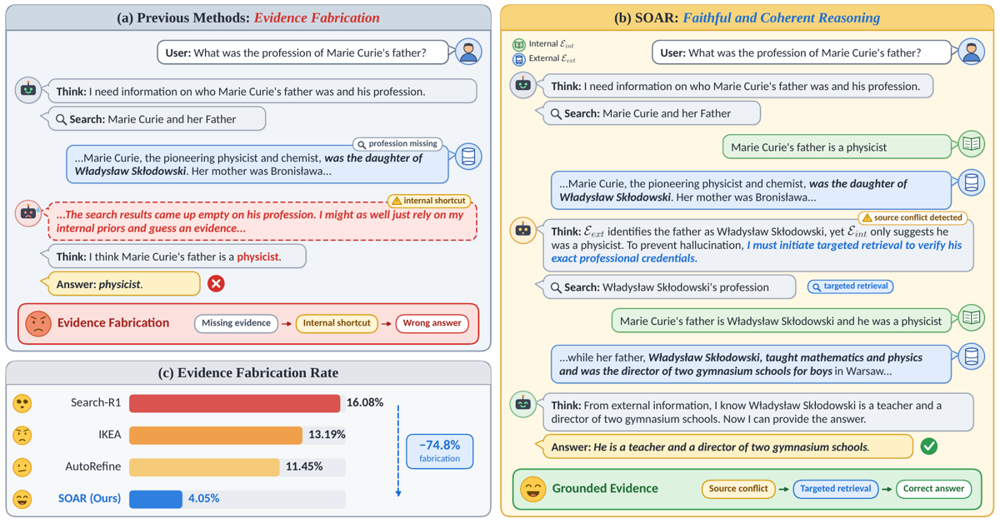
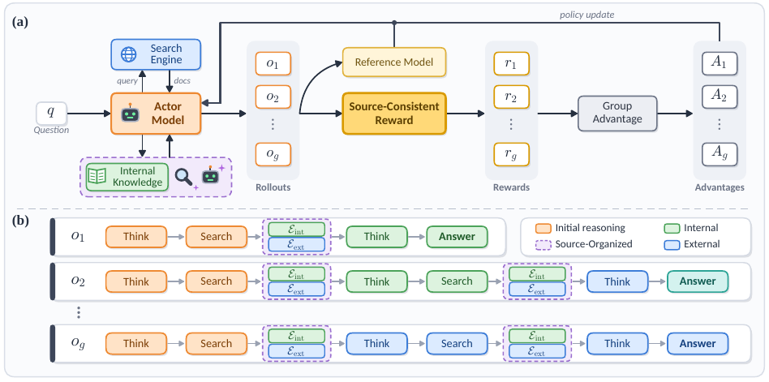
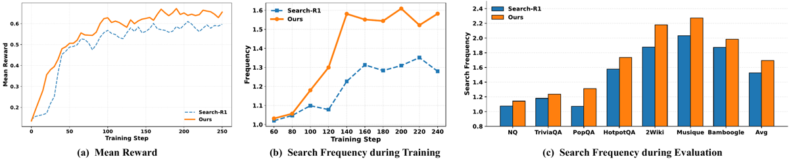

L'agent est forcé de déclarer, dans un tag <information_source> unique en fin de trajectoire, si sa réponse vient de « internal » ou de « external » ; un terme de reward R_mat (poids γ = 0,1) vérifie par exact-match de chaîne que la réponse finale figure bien dans le flux déclaré [§3.2.3, App. B, App. D].
Claim principal, formulé précisément : sur Qwen2.5-3B, l'ajout du Source-Aware Workflow + R_mat fait passer l'« Evidence Fabrication Rate » — mesuré par un juge GPT-5.6-Sol répondant grounded: true/false — de 16,08 % (Search-R1) à 4,05 %, soit −74,81 % relatif, tout en gagnant +7,3 % relatif de moyenne EM contre la meilleure baseline [Tab. 1, Tab. 4].
⚠️ Verdict d'emblée, parce qu'il conditionne la lecture de tout le reste : le mécanisme vérifié n'est pas une vérification de citation. Il n'y a ni identifiant, ni document, ni résolution contre une base : la « source » est une étiquette binaire parmi deux, et le « corpus » est un dump Wikipédia 2018 dont les 3 passages sont déjà dans le contexte du prompt. Et surtout, la métrique qui porte le −74,8 % n'est pas invariante par bras : le juge évalue l'ancrage « dans le bloc <information> », or le workflow SOAR injecte la connaissance interne du modèle à l'intérieur de ce bloc (internal: xxx external: xxx, [Tab. 13 et Fig. 1(b)]), alors que chez Search-R1 elle n'y est pas. Le même comportement — s'appuyer sur la mémoire paramétrique — est compté comme fabrication chez la baseline et comme grounded chez SOAR. Détail en 7.0 et en (b).
Origine — aucune génération de tâches, aucune annotation. Splits standards réutilisés tels quels [§4.1, Tab. 8].
| Phase | Jeux | n |
|---|---|---|
| Train | HotpotQA 90 447 + NQ 79 168 | 169 615 |
| Test | PopQA 14 267 · 2Wiki 12 576 · TriviaQA 11 313 · HotpotQA 7 405 · NQ 3 610 · MuSiQue 2 417 · Bamboogle 125 | 51 713 |
Un seul outil, un seul protocole de tags. Le prompt système est recopié intégralement en [Tab. 13] ; je le résume sans l'interpréter.
<think> / <search> / <information> / <information_source> / <answer>. « You can only generate content within these special tags. »<search> query </search>. Pas de signature d'outil, pas d'arguments, pas de navigation, pas de pagination.<search> renvoie deux flux en parallèle dans un même bloc <information> :external : top-3 documents de E5-base-v2 sur le dump Wikipédia 2018 ;internal : k faits déclaratifs produits par la policy elle-même, dans un appel à contexte isolé — i_int^(j) ~ P_θ(· | Prompt_elic, q_j) [Éq. 3], la trajectoire courante τ étant délibérément retirée pour éviter la contamination. Le prompt d'élicitation est recopié [Tab. 14] : « exactly {top-k} items », « each item MUST be a single declarative sentence », « Do NOT invent, guess, speculate, or hallucinate ». La valeur de k : non précisée.<information_source>, émis avant la réponse finale, contenant un seul mot parmi « internal » et « external ». ⚠️ C'est l'intégralité du dispositif d'attribution : pas d'attribution par claim, pas d'identifiant de document, pas de span, pas de pinpoint.<answer> Beijing </answer> » [Tab. 13]. ⚠️ Conséquence qui structure tout le reste du mémo : il n'existe pas de réponse multi-claims dans cet environnement. Il n'y a rien à compter en « claims par réponse », et aucune omission possible : la réponse est obligatoire.R_fmt, voir §3) et non par le harness. Que devient une trajectoire non parsable — retirée du groupe ou scorée 0 ? Non précisé. Les épisodes sans verdict : non précisé.i_int^(j) est échantillonné depuis la policy en cours d'entraînement, dans un contexte différent (trajectoire retirée). Trois questions que le papier ne pose jamais : ces tokens sont-ils dans la loss ? leurs log-probs sont-elles recalculées ? la séquence d'entraînement est-elle celle réellement émise ? Si oui, la trajectoire n'est plus une chaîne mais une forêt de préfixes et le ratio d'importance par token est invalidé ; si non, l'élicitation est une action non créditée qui détermine pourtant le reward (R_mat dépend de son contenu quand C_y = internal). Aucune des deux branches n'est documentée.Question: Which film was released earlier, Ek Ladka Ek Ladki or The Original Latin Kings Of Comedy?
<think> I need the specific release dates for both films. </think>
<search> Which film was released earlier, ... ? </search>
<information> Internal: ...Original Latin Kings Of Comedy was released in 1978...
External: ...Ek Ladka Ek Ladki ... released on June 19, 1992... </information>
<think> ... the internal date for the second film conflicts ... requires external verification. </think>
<search> When was The Original Latin Kings Of Comedy released? </search>
<information> Internal: ...1978... External: ...released in 2002... </information>
<think> Comparing the two confirmed dates (1992 vs. 2002) ... </think>
<answer> Ek Ladka Ek Ladki </answer>
Ce que montre cet exemple, et que le papier ne commente pas : l'« erreur » détectée est un conflit entre deux flux, pas une non-existence de source. Le mécanisme est un détecteur de désaccord interne↔externe, pas un vérifieur.
Corps [§3.2.3] : R_total = R_ans ⊕ R_fmt ⊕ R_mat — l'opérateur ⊕ n'est jamais défini dans le corps. Il l'est en annexe [App. D], et c'est une somme :
R = R_ans + α·R_fmt + γ·R_mat, α = 0,2 , γ = 0,1
« The final reward is obtained by summing the three components and applying normalization. »
Donc : somme pondérée, pas de conjonction, pas de clause d'échec. Trois indicateurs binaires, tous terminaux (outcome), aucun crédit par step, aucun crédit partiel.
| Terme | Définition | Granularité | Poids | Part du reward max (1,3) |
|---|---|---|---|---|
R_ans |
1 ssi extract(y) = y_gt (EM contre la ground truth) [Éq. 4] |
outcome, binaire | 1,0 | 77 % |
R_fmt |
α·1(y is structurally valid) — tags <search>, <think>… [Éq. 5] |
outcome, binaire | 0,2 | 15 % |
R_mat |
γ·1(Verify(y, E_{C_y}) = 1) [Éq. 6] |
outcome, binaire | 0,1 | 7,7 % |
⚠️ Le terme qui porte toute la thèse du papier pèse 7,7 % du reward maximal. Nuance qui joue en sens inverse : les advantages étant normalisés par groupe (GRPO, G = 5), dans un groupe où les 5 rollouts partagent le même R_ans et le même R_fmt, R_mat devient le seul terme discriminant. C'est un départageur, et c'est exactement pourquoi un bras placebo serait indispensable (voir §5).
Verify vérifie, précisément«
Verify(·)evaluates whether the generated answer is consistent with the specified information stream. By default, We adopt an exact-match implementation for efficiency » [§3.2.3] « We implementVerify(y, E_{C_y})using a rule-based exact-match (EM) verifier for computational efficiency during RL training. » [App. B]
Décomposition demandée, niveau par niveau :
| Niveau | Présent ? | Par quel moyen | Déterministe ? |
|---|---|---|---|
| (i) La source existe (résolution d'identifiant contre une base) | ABSENT | il n'y a aucun identifiant : C_y ∈ {internal, external}, deux valeurs. Rien n'est résolu contre rien. |
— |
| (ii) La source contient ce qu'on lui attribue (entailment) | PRÉSENT, en version minimale | R_mat = exact-match de la chaîne de réponse dans le texte du flux déclaré. Déterministe, rule-based, coût nul. La normalisation de chaîne, la casse, les alias : non précisés. |
oui |
| (ii′) variante entailment par juge | testée puis rejetée | Claude Opus 4.8 substitué à l'EM dans R_mat, ré-entraînement à réglages identiques [App. B, Tab. 7] : 0,4187 vs 0,4160 de moyenne, soit +0,0027 — « only marginal improvements », rejetée pour le coût en tokens et la latence. |
non |
| (iii) La source est pertinente au point qu'elle soutient | ABSENT DU REWARD | approximé uniquement à l'évaluation par le juge GPT-5.6-Sol grounded: true/false [Tab. 2], qui n'entre jamais dans la boucle. |
non |
Base fermée ou corpus vivant — la question posée en premier. Base fermée, intégralement. Dump Wikipédia 2018 + index E5-base-v2 + top-3 documents déjà présents dans le contexte du prompt [§4.1]. Verify est une recherche de sous-chaîne dans le prompt, pas une requête sortante. La section Limitations le concède sans détour : « Our primary training and evaluation rely on Wikipedia as a static knowledge source, which enables clean diagnosis of the Evidence Fabrication issue but does not fully capture the extreme volatility of open-web environments. »
Le seul contact avec un corpus vivant est WebWalkerQA [App. F] : « we migrate SOAR to an online search setting, where the agent queries a live search API ». Mais c'est un transfert zero-shot du checkpoint 7B — « Zero-shot performance comparison » [Tab. 10 caption]. Aucun entraînement, et donc aucune vérification, ne touche jamais un corpus vivant. C'est précisément l'écart que le mémo devait mesurer, et il est total.
Verify lui-même (celui qui est dans le reward) : jamais mesurée. Ni FP, ni FN, ni accuracy, ni dénominateur. Le seul proxy est l'effet aval sur l'EM final [Tab. 7]. ⚠️ C'est l'absence la plus coûteuse du papier : on ne sait pas à quelle fréquence un EM de sous-chaîne récompense une correspondance fortuite (date, nombre, « yes »/« no » — et le prompt donne lui-même <answer> yes </answer> en exemple).<information> block ». Et c'est de là que vient le problème de (b) : le contenu du bloc <information> diffère selon le bras.Non. Aucune solution dégénérée testée, aucun mutant, aucune policy entraînée à l'exploiter. L'unique expérience « robustesse » [§4.5] corrompt 5 % des échantillons d'entraînement en remplaçant l'évidence correcte par de l'information trompeuse — c'est une perturbation de l'environnement, pas une attaque du vérifieur. Détail en §5.
GRPO vanilla, implémenté sur veRL. Rien n'est modifié dans l'algorithme : toute la contribution est dans l'espace d'observation et dans un terme de reward additionnel [Fig. 2(a)].
| Hyperparamètre | Valeur [App. C.2, App. D] |
|---|---|
| Algo | GRPO |
| Matériel | 1 nœud, 8× H200 |
| Epochs / batch | 3 epochs, global batch 256 prompts/step (⚠️ incompatible avec les ≈ 250 steps des Fig. 3(a)(b), cf. §1) |
| LR actor | 5 × 10⁻⁷, warmup linéaire ratio 0,285 |
| Groupe (rollouts/prompt) | G = 5 |
| Température de rollout | 1,0 |
| Tours de recherche max | 5 ; top-3 documents |
| Poids de reward | α = 0,2 ; γ = 0,1 ; somme puis normalisation (forme non précisée) |
| KL (β) | terme présent dans l'objectif [Éq. 1, Éq. 2], valeur non précisée |
| Clipping, ratio, epochs PPO internes | non précisés |
| Normalisation d'advantage | « Group Advantage » [Fig. 2(a)], détail non précisé |
| Longueurs max (prompt, génération) | non précisées |
| On/off-policy, staleness | non précisés |
| k de l'élicitation interne | non précisé |
| Reference model | présent [Fig. 2(a)] ; identité et fréquence de mise à jour non précisées |
Le papier ne rapporte aucun reward hacking, et n'en cherche aucun. Le seul failure mode nommé est celui de la baseline (evidence fabrication), jamais un failure mode de SOAR. Je prends donc les trois voies demandées et je dis, pour chacune, ce que le papier permet ou non de trancher.
Structurellement impossible dans cette forme-là : R_mat est un indicateur binaire par trajectoire, pas un compte de citations. Il n'y a pas de numérateur à saturer. Cette immunité est accidentelle (elle vient de ce que le reward est grossier), pas conçue.
Mais la variante correspondante existe et son signal est visible dans le papier : émettre plus d'appels <search> (jusqu'à 5) élargit E_ext, donc augmente la probabilité que la chaîne de réponse apparaisse quelque part dans le flux déclaré, donc R_mat = 1 plus souvent. Or la fréquence de recherche monte pendant l'entraînement, de ≈ 1,03 à ≈ 1,58 appel/question [Fig. 3(b)], et reste au-dessus de la baseline sur 7 benchmarks sur 7 à l'inférence [Fig. 3(c)].
⚠️ Les auteurs lisent cette courbe comme une vertu — « a decisive strategic shift toward proactive search » [§4.3]. Les deux lectures — recherche proactive et élargissement du filet pour satisfaire R_mat — prédisent exactement la même courbe. Le papier ne fournit rien qui les sépare : ni le taux de satisfaction de R_mat, ni la redondance entre requêtes successives, ni le gain d'information par appel supplémentaire. Deux mesures à une ligne de code auraient tranché ; aucune n'est faite.
Analogue direct, et c'est la faille structurelle du design : l'agent peut déclarer C_y = internal. Or E_int est produit par la policy elle-même [Éq. 3]. Donc dans cette branche, R_mat ne compare pas une affirmation à une source : il compare deux sorties du même modèle. C'est de l'auto-certification. Le seul garde-fou est indirect — R_ans exige que la réponse soit juste, et le prompt d'élicitation est « fixed, neutral ». Rien dans l'objectif n'empêche la policy de dériver vers des bullets internes plus larges, plus nombreux ou plus « contenants ».
Le chiffre qui aurait tranché, et qui n'existe pas : la part des trajectoires qui satisfont R_mat via la branche internal plutôt que external, et son évolution au cours de l'entraînement. C'est, à mon sens, le seul nombre manquant qui invaliderait ou confirmerait la méthode. Le papier mesure la fréquence de recherche (un proxy très lâche) et jamais la distribution de C_y. Longueur, nombre d'items k, contenu du flux interne : jamais inspectés.
Non mesurable dans cet environnement, et c'est une propriété du benchmark, pas une réfutation. La réponse est un span court, obligatoire (<answer> imposé par le protocole), scorée en EM. Il n'y a aucun canal d'abstention : pas d'option « evidence insufficient », pas de reward pour l'aveu d'ignorance. L'abstention est strictement dominée (R_ans = 0 garanti). Donc :
- taux d'omission : non mesuré, et non mesurable ici ;
- canal de couverture qui punirait un claim manquant : inexistant ;
- nombre de claims par réponse : structurellement 1 — la question « cite-t-il moins ? » n'a pas de sens dans ce format.
⚠️ Mon évaluation, et c'est la phrase que le mémo devait écrire franchement : la méthode n'optimise pas vers le silence prudent ici, mais uniquement parce que le silence est interdit par le format. Le mécanisme, lui, est asymétrique par construction : R_mat récompense « ce que je dis est retrouvable dans ce que j'ai déclaré », et rien ne récompense « j'ai dit tout ce qu'il fallait dire ». Transposé à une réponse longue et argumentée où l'abstention est possible — c'est-à-dire au droit — la prédiction est que la policy supprime le claim non étayé plutôt que de l'étayer, et que le reward monte. Le papier ne contient aucune expérience qui contredise cette prédiction, et son environnement est précisément celui qui ne peut pas l'exhiber.
Les ablations [Tab. 3, Tab. 4] retranchent R_mat ; elles ne le remplacent pas. Il n'existe aucun bras portant un terme de même forme, même γ = 0,1, même coût, information de source détruite — par exemple γ·1(la réponse apparaît dans l'UN OU L'AUTRE flux, quelle que soit la déclaration), ou γ·1(le tag <information_source> est bien formé), ou γ·Bernoulli(p) calibré sur le taux de satisfaction observé.
Sans lui, le gain de R_mat (+0,014 de moyenne multi-hop, 0,333 vs 0,319 [Tab. 3]) n'est pas attribué à la vérification de source : il est compatible avec « tout terme binaire supplémentaire à γ = 0,1 qui départage un groupe GRPO où R_ans est constant ». Et le terme de format R_fmt existant déjà dans les deux bras (hérité de Search-R1-v0.3), le papier ne contient même pas le placebo gratuit qu'aurait été « bonus de présence de citation ».
[§4.5] injecte du bruit dans 5 % des échantillons d'entraînement, ciblés sur les requêtes long-tail où la connaissance interne suffit, en remplaçant l'évidence correcte par de l'information trompeuse. Résultat : SOAR perd −0,019 de moyenne contre −0,039 (Search-R1), −0,033 (AutoRefine), −0,038 (IKEA) [Tab. 5] ; et la fabrication monte de +0,33 pt contre +2,15 / +1,51 / +1,79 [Tab. 6]. ⚠️ Trois réserves. (1) C'est une perturbation d'environnement, pas une attaque du vérifieur. (2) Le setup est favorable par construction au mécanisme : on corrompt l'externe là où l'interne est bon, c'est-à-dire exactement le cas que la déclaration de source est faite pour arbitrer ; le cas symétrique — corrompre l'interne, ou créer un désaccord sans bonne réponse dans aucun flux — n'est pas testé. (3) Le backbone de [Tab. 5] n'est jamais nommé ; je l'ai identifié comme le 7B parce que les quatre valeurs par défaut (SOAR 0,448 ; Search-R1 0,415 ; AutoRefine 0,425 ; IKEA 0,402) reproduisent exactement la colonne Avg du bloc 7B de [Tab. 1], et que 0,545 / 0,375 sont bien les moyennes single-hop / multi-hop de cette ligne (⚠️ ma reconstitution). Or la colonne « Default » de [Tab. 6] reprend les taux de fabrication du 3B (16,08 / 13,19 / 11,45 / 4,05, identiques à [Tab. 4] et à [Fig. 1(c)], explicitement annoncés « on the 3B backbone » en [§4.2]). Les deux tableaux de la même sous-section mélangent donc deux backbones.
Famille très peu couverte, comme souvent.
| # | Chiffre annoncé (abstract / intro / légendes) | Source dans le corps | Verdict |
|---|---|---|---|
| 1 | « outperforms baselines on 3B and 7B backbones by 7,3 % and 5,4 % » (abstract, contributions) | [Tab. 1], lignes Δ% : +7,3 % (3B), +5,4 % (7B). Recalcul : 0,414/0,386−1 = +7,25 % contre AutoRefine ; 0,448/0,425−1 = +5,41 % contre AutoRefine | confirmé (arithmétique exacte), mais sur-généralisé dans la formulation : ce sont des relatifs, soit +2,8 et +2,3 points absolus d'EM moyen |
| 2 | « SOAR consistently outperforms competitive baselines on both 3B and 7B backbones » [§4.2] | [Tab. 1] : NQ 3B −1,0 % (IKEA 0,464 > 0,459) ; NQ 7B −1,7 % (IKEA 0,482 > 0,474) | contredit : 2 cellules sur 14 sous la meilleure baseline. À leur crédit, la ligne Δ% l'affiche elle-même |
| 3 | « reducing evidence fabrication by 74,8 % » (abstract) / « 74,81 % relative reduction » (contributions) | [Tab. 4], colonne Total Reduct. ; recalcul 4,05/16,08−1 = −74,81 % | confirmé comme nombre, sur-généralisé en portée : 3B uniquement, dénominateur = Search-R1 seul (16,08 %), définition = juge GPT-5.6-Sol |
| 4 | ⚠️ comparateur favorable, et incohérent entre les deux chiffres de tête | contre la meilleure baseline en fabrication (AutoRefine, 11,45 % [Tab. 6]) : 4,05/11,45−1 = −64,6 % | sur-généralisé : le chiffre d'accuracy prend la meilleure baseline comme comparateur, le chiffre de fabrication prend la pire. Les deux titres n'utilisent pas le même étalon |
| 5 | « Search-R1 reaching 16,0 % » (intro) | [Tab. 4], [Tab. 6], [Fig. 1(c)] : 16,08 % | confirmé (arrondi) |
| 6 | « IKEA at 13,4 % » (intro) | [Tab. 6] et [Fig. 1(c)] : 13,19 % | contredit — 13,4 % vs 13,19 % |
| 7 | « AutoRefine at 11,1 % » (intro) | [Tab. 6] et [Fig. 1(c)] : 11,45 % | contredit — 11,1 % vs 11,45 %, et dans le sens qui flatte (la meilleure baseline est présentée plus mauvaise qu'elle n'est) |
| 8 | « SOAR reduces the evidence fabrication rate to 4,2 % » (légende de la Fig. 1) | la figure elle-même affiche 4,05 %, comme [§4.2] et [Tab. 4] | contredit par sa propre figure — 4,2 % vs 4,05 % |
| 9 | « it reaches an average of 0,414, surpassing Search-R1 by +4,2 % » [§4.2] | [Tab. 1] : 0,414 vs 0,372 ⇒ +4,2 points, soit +11,3 % relatif | contredit tel qu'écrit (des points libellés en %) ; confirmé si lu en points. Noter que « % » désigne du relatif au #1 et de l'absolu ici, dans la même section |
| 10 | « SOAR 3B average = 0,414 » [§4.2, Tab. 1] | trois valeurs coexistent : 0,414 [Tab. 1] · 0,4160 ± 0,0016 pour « w/ EM check », qui est la configuration par défaut [Tab. 7] · 0,4187 ± 0,0019 pour « SOAR » [Tab. 12] | contredit — trois chiffres pour le même système ; aucun des trois n'est désigné comme canonique |
| 11 | ⚠️ « SOAR improves over Search-R1 by +4,74 points (0,4187 vs 0,3713) … outperforms Search-R1 on every benchmark across all seeds » [App. G.2] | la ligne « SOAR » de [Tab. 12] est identique cellule par cellule, écarts-types compris, sur les 8 colonnes, à la ligne « w/ Claude Opus 4,8 judge » de [Tab. 7] (0,4698±0,0021 · 0,6348±0,0046 · 0,4798±0,0046 · 0,3692±0,0036 · 0,4142±0,0029 · 0,1917±0,0042 · 0,3705±0,0091 · 0,4187±0,0019) | contredit : l'analyse de significativité statistique ne porte pas sur la configuration par défaut (EM, 0,4160) mais sur la variante à juge LLM, celle-là même que le papier déclare rejeter pour son coût. Le chiffre de tête n'a donc aucune estimation de variance qui lui corresponde dans ce tableau |
| 12 | « Removing the Source-Consistent Reward alone degrades performance » (légende [Tab. 3]) | [Tab. 3] : MuSiQue 0,192 sans le reward contre 0,187 avec | contredit sur 1 cellule sur 4 ; et [Tab. 3] ne porte aucun écart-type pour un écart de 0,014 de moyenne, alors que les stds disponibles ailleurs vont jusqu'à ±0,0091 (Bamboogle, n = 125) |
| 13 | « the reward mechanism … further reduces the total fabrication rate from 6,75 % to 4,05 % » [§4.4] | [Tab. 4] : w/o reward 6,75 % (−58,02 %) → SOAR 4,05 % (−74,81 %) | confirmé, et c'est le chiffre le plus important du papier pour la mission : 58,02 des 74,81 points de réduction relative — soit 78 % de l'effet annoncé — viennent du workflow seul, pas du reward de cohérence de source |
| 14 | ⚠️ cohérence interne de [Tab. 4] (mon calcul) | si Answer-Correct / Answer-Wrong partitionnent le même ensemble, le Total impose : Search-R1 7,57p+24,14(1−p)=16,08 ⇒ p = 48,6 % ; SOAR 1,34p+6,92(1−p)=4,05 ⇒ p = 51,4 %. Or [Tab. 1] donne 37,2 % et 41,4 % (macro) ; micro-moyenne pondérée par [Tab. 8] : 42,9 % et 46,7 % (mon calcul) | introuvable / non élucidé : la précision implicite du tableau de fabrication dépasse de ≈ 5 points la micro-moyenne et de ≈ 11 points la macro-moyenne. Soit l'éval de fabrication ne porte pas sur l'ensemble de [Tab. 1], soit les deux groupes ne partitionnent pas. Le papier ne le dit pas |
| 15 | « maintains clear advantages on the more challenging ASQA and WebWalkerQA » [§4.2] | [Tab. 10] : ASQA F1 68,5 vs 66,5 (+2,0) ; WebWalkerQA 25,2 vs 21,1 — contre Search-R1 seul, 7B, zero-shot | sur-généralisé : une seule baseline (pas la meilleure), zéro-shot, et c'est l'unique point de contact avec une recherche en ligne |
| 16 | « maintains token efficiency comparable to baselines », 431,0 vs 408,4 | [Tab. 11] : +5,5 % par tour. Par épisode, en combinant avec [Fig. 3(c)] : ≈ +17 % (mon calcul, barres lues sur la figure) | sur-généralisé : vrai au tour, non établi à l'épisode, et la passe d'élicitation n'est jamais comptée en FLOPs |
| 17 | « approximately 1,6 calls per query » [§4.3] | [Fig. 3(b)] : plateau ≈ 1,52–1,61 | confirmé |
| 18 | « The judge agrees with human annotation in 98,5 % of the cases (197 out of 200) » [App. G.3] | 197/200 = 98,5 % | confirmé arithmétiquement, sur-généralisé comme preuve de fiabilité : avec une base de 4,05 % de fabrication, un juge répondant toujours « grounded » ferait ≈ 96 % ; l'écart au plancher trivial est de ≈ 2,5 points, soit ≈ 3 cas |
| 19 | « 3 epochs, global batch 256 » [App. C.2] | 169 615/256 × 3 ≈ 1 988 steps, contre ≈ 250 en [Fig. 3(a)] et 240 en [Fig. 3(b)] | contredit — ≈ 0,38 epoch effective si l'axe des figures fait foi |
| 20 | backbone de la section Robustness [§4.5] | jamais nommé. [Tab. 5] reproduit exactement la colonne Avg du bloc 7B de [Tab. 1] ; [Tab. 6] reprend les taux de fabrication du 3B de [Tab. 4] | contredit : les deux tableaux d'une même sous-section mélangent deux backbones (⚠️ ma reconstitution, le papier ne le dit ni ne le dément) |
Synthèse de la 7.0 : 6 chiffres confirmés, 8 contredits, 5 sur-généralisés, 1 non élucidé. Aucun chiffre introuvable — les tableaux existent et sont lisibles, ce qui est à mettre au crédit du papier. Mais les deux contradictions #11 et #13 touchent le cœur de la thèse : la variance n'est pas mesurée sur la configuration annoncée, et 78 % de la réduction de fabrication provient du composant qui n'est pas le reward.
| 3B | 7B | |
|---|---|---|
| SOAR, EM moyen (7 bench.) | 0,414 [Tab. 1] (0,4160 ± 0,0016 en [Tab. 7]) | 0,448 |
| Meilleure baseline | AutoRefine 0,386 | AutoRefine 0,425 |
| Search-R1 | 0,372 (0,3713 ± 0,0021) | 0,415 |
| Fabrication (juge GPT-5.6-Sol) | 16,08 % → 4,05 % | non mesurée |
Workflow seul (sans R_mat) |
0,319 multi-hop ; 6,75 % de fabrication | — |
NQ et HotpotQA sont in-distribution ; PopQA, 2Wiki, MuSiQue, Bamboogle sont OOD au sens du jeu mais partagent le corpus d'indexation. Les deux cellules où SOAR perd sont NQ, c'est-à-dire in-distribution [Tab. 1] — fait non commenté par les auteurs. Les gains relatifs les plus gros sont sur MuSiQue (+16,9 % / +12,2 %) et 2Wiki (+13,6 % / +10,1 %), les deux multi-hop les plus durs.
Deux axes, correctement construits sur l'axe principal : [Tab. 3] (performance : SOAR 0,333 → w/o reward 0,319 → w/o les deux 0,294) et [Tab. 4] (fabrication, ventilée par Answer-Correct / Answer-Wrong — c'est la bonne ventilation et elle est faite). [Tab. 7] isole Verify EM vs juge LLM. Manquent : le placebo (§5), un bras « reward sans workflow » (structurellement impossible, à signaler), la distribution de C_y, et tout écart-type dans [Tab. 3].
Deux tailles seulement (3B, 7B). Le gain relatif décroît avec la taille : +7,3 % → +5,4 % ; les auteurs écrivent « Consistent improvement with model scaling » [§4.2] sans relever la décroissance. Avec deux points, aucune tendance n'est établissable dans un sens ni dans l'autre.
| Case | Verdict | Justification en une ligne |
|---|---|---|
baselines |
✗ | Même backbone, même retriever, même corpus, même top-k, baselines ré-implémentées depuis le code des auteurs — tout cela est bon. Mais aucun budget apparié n'est reporté : epochs, batch, G et température ne sont donnés que pour SOAR [App. C.2], SOAR émet structurellement une génération de plus par tour de recherche et plus de tours, et AdaSearch est repris de sa publication sans ré-exécution [§4.1]. |
ablation |
✓ | Échelle à trois points (complet / sans reward / sans les deux) sur performance et fabrication, plus l'ablation EM vs juge LLM [Tab. 3, 4, 7] — la contribution de chaque composant est isolée, même si le verdict qui en sort n'est pas celui que les auteurs en tirent. |
variance |
✓ | 4 runs avec mean ± std en [Tab. 7] et [Tab. 12], fabrication moyennée sur 4 runs. ⚠️ Deux réserves lourdes : ce sont des seeds d'inférence (« we run inference … under four random seeds », T = 1,0), pas des seeds d'entraînement — la variance qui compte n'est pas mesurée ; et la ligne « SOAR » de [Tab. 12] est celle de la variante à juge LLM (#11). [Tab. 1], [Tab. 3], [Tab. 5], [Tab. 6] et [Tab. 9] n'ont aucun écart-type. |
coherence |
✗ | 8 contradictions en 7.0, dont deux structurelles : variance mesurée sur une autre configuration que le chiffre de tête (#11), et mélange de backbones dans une même sous-section (#20). |
eval |
✗ | Juge de la métrique « validé » par un agrégat à 98,5 % sur n = 200, sans FP/FN séparés, sans accord inter-juges, sans reproductibilité, et à ≈ 2,5 points d'un plancher trivial (#18). Et surtout : la métrique n'est pas invariante par bras — le juge lit le bloc <information>, dont le workflow SOAR modifie le contenu (voir (b) ci-dessous). Le vérifieur du reward, lui, n'est jamais mesuré du tout. |
repro |
✗ | Aucun code, aucun dépôt, aucun checkpoint, aucune release annoncée nulle part dans le papier. URLs testées : https://arxiv.org/abs/2610.13157 → 200 ; le dépôt de la baseline https://github.com/PeterGriffinJin/Search-R1 → 200 (c'est le seul point de départ exécutable que laisse le papier). |
evidence : 2/6 (ablation, variance), manquant : baselines, coherence, eval, repro.
À répliquer — et plus précisément : le claim de tête est, en l'état, non attribué. Le papier est honnête dans ses tableaux (la ligne Δ% affiche ses deux défaites ; l'ablation donne le chiffre qui dégonfle son propre titre), mais l'inférence centrale ne tient pas pour trois raisons indépendantes et cumulatives :
<information> que le juge lit pour décider si le raisonnement est « grounded in the provided information ». Même comportement, verdict opposé selon le bras.R_mat (16,79 points de réduction relative, +0,014 d'EM multi-hop sans écart-type) est indiscernable de l'effet d'un départageur binaire quelconque à γ = 0,1 dans un groupe GRPO.Ce qui reste solide et vaut d'être retenu : le mécanisme de workflow — matérialiser la connaissance paramétrique en un flux explicite, côte à côte avec le flux récupéré, de sorte que leur désaccord devienne une observation. Ça, c'est réel, c'est bon marché, et c'est ce que [Tab. 4] mesure le mieux (−58 % de fabrication à lui seul). Le reward de cohérence de source, au contraire, est un ajout marginal dont on ne sait pas s'il fait autre chose que départager.

Ce qu'il faut voir : le panneau (c) affiche 4,05 % pour SOAR, alors que la légende du même float annonce 4,2 % — contradiction interne (#8 de la 7.0), et les valeurs des baselines y sont 16,08 / 13,19 / 11,45, contre 16,0 / 13,4 / 11,1 écrits dans l'intro (#6, #7). Surtout, le panneau (b) montre ce qui fait tout le papier et tout son problème : sous SOAR, le fait « Marie Curie's father is a physicist » produit par le modèle lui-même apparaît dans le flux à côté du passage récupéré, à l'intérieur du même bloc d'information. C'est le mécanisme utile (le désaccord devient observable) et le confond de la métrique (le juge compte ce flux comme « provided information »), dans la même image.

Ce qu'il faut voir : en (a), GRPO strictement standard — rollouts, reference model, Group Advantage ; le seul bloc ajouté est « Source-Consistent Reward ». En (b), la vraie granularité du dispositif : les trajectoires diffèrent par la couleur du bloc final (vert = internal, bleu = external), c'est-à-dire par une étiquette parmi deux, émise une seule fois. Il n'y a nulle part d'identifiant de document, de span, de pinpoint. Le « precise credit assignment » du titre est un crédit entre deux canaux, pas entre des claims ni entre des sources.

Ce qu'il faut voir : en (b), la fréquence de recherche de SOAR monte de ≈ 1,03 à ≈ 1,58 — mais Search-R1 monte aussi, de ≈ 1,02 à ≈ 1,28 : la « bascule vers la recherche proactive » n'est pas propre à SOAR, seule son amplitude l'est (+0,3 appel/question). Et l'axe commence à l'étape 60, donc les 60 premiers steps — là où la dynamique de l'arbitrage interne/externe se joue — ne sont pas montrés. En (c), SOAR cherche plus sur 7 benchmarks sur 7 : c'est exactement la signature que produirait une policy qui élargit son filet pour satisfaire R_mat, et rien dans le papier ne sépare cette lecture de celle des auteurs.
| Ingrédient | Choix du papier | Équivalent juridique | Transfert | Ce qui manque |
|---|---|---|---|---|
| Source des tâches | Splits train de NQ + HotpotQA, 169 615 prompts, aucun filtrage, aucun curriculum, EM contre une réponse courte [§4.1, Tab. 8] | questions de recherche juridique à réponse courte vérifiable (quel article ? quel arrêt ? quel délai ? quelle juridiction compétente ?) — la couche basse de Vals Legal Research Bench | adaptable | une ground truth courte et non ambiguë n'existe en droit que sur la frange la plus factuelle ; dès qu'on monte vers LAB (mémos, revue contractuelle) l'EM s'effondre et il ne reste rien de leur R_ans |
| Vérifieur | Verify = exact-match de la chaîne de réponse dans le flux déclaré, C_y ∈ {internal, external}, binaire, γ = 0,1, sur un dump Wikipédia 2018 déjà dans le contexte [§3.2.3, App. B, App. D] |
résolution d'identifiant de citation contre un citator (existence) ; puis entailment du point de droit ; puis validité | non, tel quel — l'idée est bonne, l'implémentation ne porte rien de ce dont le droit a besoin | les trois conditions dures ci-dessous ; aucune mesure de FP/FN du vérifieur ; aucune normalisation de chaîne documentée (une correspondance EM fortuite sur une date ou un « yes » est indiscernable d'un ancrage réel) |
| Harness / outils | un seul outil, <search>, sans argument ; retour = top-3 docs + k faits auto-élicités ; ≤ 5 tours ; réponse courte obligatoire [Tab. 13] |
recherche + filtre de juridiction + filtre de date de version + citator (Shepard/KeyCite ou équivalent) + lecture de pinpoint | non | la signature d'outil juridique a au minimum trois arguments que le papier n'a pas : juridiction, date d'effet, profondeur de l'historique procédural |
| Algo | GRPO vanilla, veRL, G = 5, T = 1,0, LR 5e-7, 8× H200, β du KL non précisé [App. C.2] | identique, rien de spécifique | direct | rien — c'est la partie la plus réutilisable, et la moins informative |
| Curriculum | aucun | progression par juridiction, par époque, par profondeur de chaîne de citations | non applicable (il n'y en a pas à transférer) | tout |
| Anti-hacking | aucun test. Pas de placebo, pas de solution dégénérée, pas de policy adverse. Unique expérience voisine : 5 % d'évidence externe corrompue [§4.5] | indispensable : le reward de citation est le reward le plus hackable qui soit | non | le chiffre manquant qui trancherait : la part des trajectoires satisfaisant R_mat par la branche internal, et sa dérive au cours de l'entraînement |
Une citation juridique doit exister, ne pas être abrogée, être de la bonne juridiction, et ne pas avoir été infirmée en appel. Leur Verify est une recherche de sous-chaîne dans un corpus figé ; voici exactement la frontière.
Ce qu'il attraperait — et ce n'est pas rien, c'est déterministe et quasi gratuit :
- l'invention pure : un nom d'arrêt, un numéro d'article, un chiffre, une date qui n'apparaît dans aucun des passages récupérés ni dans le flux déclaré. C'est le cas d'école du papier ([Tab. 15], « Paris » qui ne figure dans aucun des trois documents) et c'est le mode d'échec le plus fréquent et le plus embarrassant en pratique ;
- l'incohérence de déclaration : l'agent annonce « external » et produit une réponse que le flux externe ne contient pas. C'est un vrai signal, déterministe, et je le reprendrais ;
- par extension immédiate et toujours déterministe : la non-résolution d'identifiant (un ECLI, un numéro de pourvoi, un n° de Recueil qui ne résout pas dans le citator). Le papier ne le fait pas, mais c'est la version juridique naturelle de son Verify, et c'est le seul des trois niveaux que nous pouvons rendre non-hackable, parce que l'identifiant est discret, fermé, et externe à la policy.
Ce qu'il laisserait intégralement passer :
- l'abrogation — aucune dimension temporelle. Leur corpus est un snapshot de 2018, ce qui est la posture exactement inverse de celle que le droit exige ; un texte abrogé en 2021 est, pour leur vérifieur, parfaitement valide ;
- la juridiction — aucun champ, aucun filtre, aucun terme de reward. Une décision de cour d'appel d'un autre ressort satisfait Verify aussi bien que la bonne ;
- l'infirmation en appel — il faut un graphe de citateur (qui cite qui, et dans quel sens : confirme / distingue / infirme). Rien de tel n'existe ici, et ce n'est pas un raffinement : une citation exacte d'un arrêt cassé est pire qu'une invention, parce qu'elle survit à toute vérification d'existence ;
- le support du point précis — EM de sous-chaîne ≠ entailment. Le passage peut contenir la chaîne et ne pas soutenir la proposition. La variante juge LLM couvrirait partiellement ce niveau ; le papier la teste et la rejette pour +0,0027 [Tab. 7] — un arbitrage défendable en QA factuel, inacceptable en droit, où c'est précisément ce niveau qui fait la faute professionnelle ;
- l'exactitude de la citation textuelle et le pinpoint (page, considérant, alinéa) ;
- le claim qui manque — aucun canal de couverture (§5, voie 3).
Le papier construit un environnement où l'omission est impossible (réponse courte obligatoire, pas d'abstention, R_ans = 0 si vide) et en conclut que son reward n'a pas de coût en utilité. C'est une conclusion vraie dans son environnement et non transportable : le mécanisme R_mat récompense « ce que j'affirme est retrouvable dans ce que j'ai déclaré » et ne récompense rien du côté de l'exhaustivité. En droit, où l'omission coûte plus que l'erreur et où l'abstention est un comportement disponible et attractif, un reward de cette forme, seul, optimise vers le silence prudent. Le papier ne mesure pas le taux d'omission, n'a pas de canal de couverture, et son environnement est structurellement incapable d'exhiber le problème. Toute transposition doit donc apparier R_mat d'un terme de couverture — un rappel sur une liste d'issues ou de claims que la réponse devait traiter — et traiter le couple comme une conjonction, pas comme une somme pondérée (chez eux, un γ = 0,1 additif n'empêche jamais rien).
Pas le reward — le workflow. Matérialiser la connaissance paramétrique en un flux explicite, formaté, placé côte à côte avec le flux récupéré, de sorte que leur désaccord devienne une observation que la policy peut lire et sur laquelle elle peut agir (relancer une recherche ciblée). C'est le seul élément du papier dont l'effet est gros ([Tab. 4] : −58 % de fabrication à lui seul, avant tout terme de reward), bon marché (+5,5 % de tokens par tour [Tab. 11]), et qui ne dépend d'aucun juge. Version juridique : à chaque requête, l'agent écrit ce qu'il croit savoir (la règle telle qu'il la mémorise, la jurisprudence telle qu'il la croit valide) avant de lire ce que le citator renvoie, puis doit statuer explicitement sur le conflit. Bénéfice secondaire qui compte en contentieux : cela produit une trace de provenance auditable dans le transcript — la seule chose qui, en cas de litige, permet de montrer que la citation vient de la source et non des poids.
⚠️ Avec une réserve explicite : chez eux, le flux interne est injecté dans le bloc que le juge d'évaluation lit, ce qui a pollué leur métrique. Côté juridique, l'évaluateur doit lire le flux externe seul ; le flux interne est une aide à la décision de la policy, jamais une source admissible.
Expérience A — le placebo, un run (c'est le contrôle que le papier aurait dû payer).
Quatre bras à budget strictement apparié (même backbone, même G, mêmes steps, même nombre de tours, même nombre d'appels de vérifieur), sur une tâche de recherche juridique à réponse courte vérifiable :
1. R_ans + R_fmt (baseline) ;
2. + γ·1(l'identifiant cité **résout** dans le citator) — vérification d'existence, déterministe ;
3. + γ·1(un identifiant bien formé est présent) — placebo : même forme, même γ, même coût, l'information de source est détruite ;
4. + γ·1(l'identifiant résout **et** est en vigueur **et** de la bonne juridiction) — la version juridique complète, toujours déterministe.
Résultat attendu si le mécanisme est réel : le taux de citation non résolvable s'effondre sur 2 et 4, et reste au niveau de la baseline sur 3. Le bras 4 doit en outre réduire le taux de citation abrogée ou hors juridiction, que 2 laisse intact par construction.
Falsifiant : si le bras 3 (placebo) atteint la même réduction que 2, alors ce que R_mat achète n'est pas une vérification de source mais un départageur binaire dans un groupe GRPO où R_ans est constant — et il faut alors renoncer à la thèse du papier et au terme lui-même. Second falsifiant, propre au droit : si 4 ≈ 2 sur le taux de citation abrogée, c'est que la policy ne peut pas distinguer les deux signaux au γ choisi, et le terme doit passer en clause d'échec (conjonction) plutôt qu'en bonus additif.
Expérience B — sans aucun entraînement, quelques heures de juge (celle que je lancerais en premier). Re-passer le juge d'ancrage sur les trajectoires déjà produites par les deux bras, avec le bloc d'information restreint au flux externe seul, identiquement dans les deux bras. Attendu si la métrique est propre : l'écart de −74,8 % se maintient à quelques points relatifs près. Falsifiant — et c'est mon hypothèse : l'écart s'effondre d'un facteur significatif, parce que ce que la métrique comptait comme « ancrage » chez SOAR était en partie son propre flux interne. Cette expérience coûte zéro GPU et tranche le papier.
« Quel est notre Verify, à quel niveau, et avons-nous le droit de l'appeler dans la boucle de rollout ? » — formulée en trois sous-questions qui ne se répondent pas ensemble :
1. Existence : disposons-nous, sous licence utilisable dans un entraînement (pas seulement à l'inférence), d'un citator résolvable par identifiant, avec statut d'abrogation, juridiction et historique d'appel ? C'est le seul des trois niveaux qui soit déterministe, bon marché et non hackable — donc le seul qui puisse porter un reward dur. Si nous ne l'avons pas, tout le reste est de l'entailment par juge, avec son bruit et son coût.
2. Fraîcheur : la boucle de rollout interroge-t-elle un corpus vivant (et alors l'environnement n'est pas rejouable, ce que ce papier élude complètement et que notre infra devra traiter par un registre épinglé non compactable des réponses d'outil), ou un snapshot épinglé (et alors nous reproduisons leur posture 2018, qui est inadmissible en droit) ?
3. Couverture : qui construit la liste de référence des claims qu'une réponse devait traiter, et à quel coût expert ? Sans ce canal, R_mat et tous ses dérivés optimisent vers l'omission, et nous n'aurons aucun instrument pour le voir.